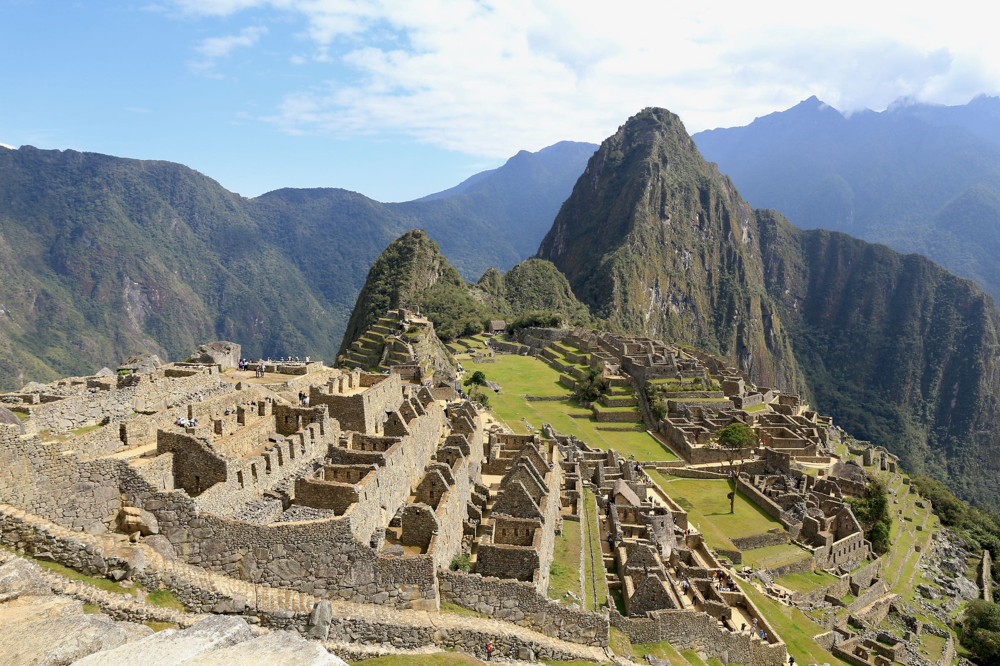

PERU
MACHU PICCHU

QUANDO IR
COMO CHEGAR
ONDE FICAR
O QUE FAZER
ONDE COMER
INGRESSOS
DICAS
VER MAIS
Guia de Destinos > América do Sul > Peru > Machu Picchu

Camille Panzera
Entusiasta da fotografia, curiosa por outros idiomas, culturas, costumes e histórias!☺️
Machu Picchu é um sítio arqueológico localizado no Peru, reconhecido como uma das maravilhas do mundo moderno! O lugar é impressionante sob inúmeros aspectos e merece entrar na sua lista de destinos para ser desbravado ao menos uma vez na vida! Exalando uma energia incrível, é um museu ao ar livre e uma verdadeira aula de conhecimento!
O que é Machu Picchu
A “cidade perdida dos Incas”, ou Machu Picchu, que significa "velha montanha" em quéchua, língua nativa, foi uma das cidades do chamado "Império Inca". O lugar ainda tem boa parte de suas construções originais e permite aos visitantes desvendar um pouquinho de um povo que guardava um conhecimento muito avançado, especialmente para a época em que lá viveram. O sítio arqueológico está 2.450 metros acima do nível do mar, em uma localização que desperta interesse justamente por ser de difícil acesso.

Machu Picchu foi toda construída por blocos de pedras encaixadas, sendo que a maior parte delas tem entre 10 kg e 15 kg — mas algumas chegam a pesar 20 toneladas. O lugar tem cerca de 32 mil hectares e reúne em torno de 200 estruturas em pedra granítica, que incluem terraços agrícolas, templos, residências, paredes enormes e canais de irrigação.
As famílias que lá viviam tinham um conhecimento muito aprofundado sobre agricultura, astronomia, matemática e acústica. É fantástica a experiência de visitar as ruínas e perceber o encaixe perfeito das paredes construídas centenas de anos atrás. É quase impossível não se questionar como esse lugar tão cheio de estrutura, em um lugar tão exótico pode ter existido e sido construído de forma tão grandiosa, que até os dias atuais segue de pé!
Andar por Machu Picchu é conhecer a história, o modo de vida e se surpreender com o conhecimento admirável que incas possuíam. Um passeio imperdível, com diversos segredos!
- Leia as dicas de ingressos para Machu Picchu
-
Reserve seu passeio a Macchu Picchu com ingresso pagando em reais
Machu Picchu foi uma das cidades do "Império Inca", cuja capital foi Cusco, e acredita-se que tenha sido povoada entre os anos de 1450 a 1540. A cidadela aparentemente abrigava entre 500 e 750 pessoas e é a prova viva da engenhosidade dessa civilização. Muitas informações que temos hoje são, na verdade, teorias, porque não se tem comprovação de todas as informações a respeito dessa civilização, já que os incas não tinham uma linguagem escrita.
O espaço teve como escolha um lugar de extraordinária localização, no alto de uma montanha, em uma zona de difícil acesso, cercado pela mata tropical peruana e por outras enormes montanhas. O hoje sítio arqueológico, considerado Patrimônio Natural e Cultural da Humanidade pela Unesco desde 1983, ficou esquecido e escondido por dezenas de anos, até a chegada de Hiram Birgham, que tornou o local público a nível mundial em 1911. Depois da chegada de Birgham, Machu Picchu ganhou notoriedade, foi alvo de pesquisas, manutenções e estudos arqueológicos para entender melhor sobre a cultura inca e seu surpreendente legado.